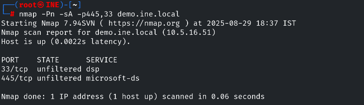

Firewall detection and Intrusion Detection System Evasion
nmap -Pn -sS -F demo.ine.local
this returns the ports that are filtered or not if it says filered then it means there is firewall if says closed it means no firewall is configured
So
nmap -Pn -sA -p445,3389 demo.ine.local -- -sA is the shortcut for -sV and -O service versions + OS version

here we know the firewall is applied.
NMAP help for FW and IDS Evasion and Spoofing:
The simple scan
nmap -Pn -sS -sV -F demo.ine.local
Fragmentaion of packets
nmap -Pn -sS -sV -p80,445,3389 -f demo.ine.local
evading the IDS
nmap -Pn -sS -sV -p445,3389 -f --data-length 200 -D <one or more ips from ifconfig eth1> <target IP>
nmap -Pn -sS -sV -p445,3389 -f --data-length 200 -g 53 -D 10.10.36.3,10.10.36.4 demo.ine.local
-D is used to decoy the ip addreses and from wireshark it is confirmed that it is working fine
-g is used to decoy the port of the source
dfg
dfg
dfg
dfg
dfg